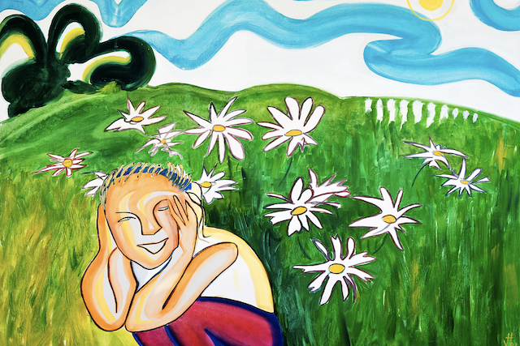

How to Be a Lot Happier: A Simple Solution
By Anisha Das
“Simplicity is the ultimate sophistication.” ~Leonardo da Vinci
There’s a funny thing with us humans.
We spend our lives trying desperately to find happiness, and yet we don’t even know
what it is. We can’t explain, describe, or define it. We just know that we want it
because it’ll make everything peachy. Time and time again, though, studies have
shown that our never-ending quest for happiness is quite often the very thing that
makes us miserable.
Trying to find happiness is an exercise in futility. This is a truth I did not
easily come to realize. It took a succession of major depressive episodes, the
sudden death of my father, a cross-country move, a broken heart, and countless
hours reading airy-fairy, self-help nonsense for me to understand that instead of
trying to find happiness, I should consciously take steps that let happiness find
me.
Suffice it to say, you will no longer find me spinning my wheels, dejectedly
searching for answers and chasing the abstract. You will no longer find me on a
never-ending quest for happiness.
But given my endless fascination with the subject, my work as a coach, and my
ever-present desire for more street cred, I recently found myself immersed in a
year-long Psychology of Happiness certification program created by best-selling
author and former Harvard professor Dr. Tal Ben-Shahar.
During the program, we were asked:
What was one of the happiest periods of your life?
What did you do during that period that made it so good?
How can you generate more happiness in your life?
I had a profoundly difficult time answering these questions, particularly the
first two. But the more I scanned through my mental scrapbook, the more I kept
thinking about the months between ninth and tenth grade—my last romp as a
camper at the sleepaway camp I’d been going to for six consecutive summers.
It wasn’t so much what I did—or what we did—that made it so good. I think, perhaps,
it was what we didn’t do.
There were no smartphones. So, there were no screens to stare at, no calls to make,
no messages to check, no constant dinging notifications.
There was no social media. There were no Facebook rants, no Twitter trolls, no
outlandishly phony Instagram influencers to drum up our insecurities.
We weren’t constantly comparing ourselves to others while looking at the carefully
curated highlight reels from their lives.
No, we were making our own highlight reels in the middle of nowhere—or, more
accurately, in the middle of northern Wisconsin. We hadn’t the slightest idea what
anyone else was doing, and we didn’t care.
And I don’t think that life in general will ever be that simple again.
- But every time I simplify my own life, even just a little bit, I’m a little bit happier.
- Every time I de-clutter, I’m a little bit happier.
- Every time I delete a dating app, I’m a little bit happier.
- Every time I forgo watching the news or sign off social media, I’m a little bit happier.
- Every time I turn my phone on Do Not Disturb, I’m a little bit happier.
- Every time I sit in silence and meditate and let my thoughts pass by like the weather, I’m a little bit happier.
So, how can you generate more happiness in your life?
Well, I don’t have a whole lot of street cred. But if I had to take a stab at it: Stop doing the things that cause you unhappiness. Simplify, simplify, simplify. And maybe find a summer camp for adults.
About Me

I am an author, blogger, humorist, certified transformational life coach, and certified happiness trainer. He currently lives in New Orleans. Catch up with me on my website .
stay healthy!
get tiny buddha's 30-day healthier you challenge ,when you subscribe,in your inbox.
RECENT FORUM TOPICS
FUN & INSPIRING

LATEST POSTS